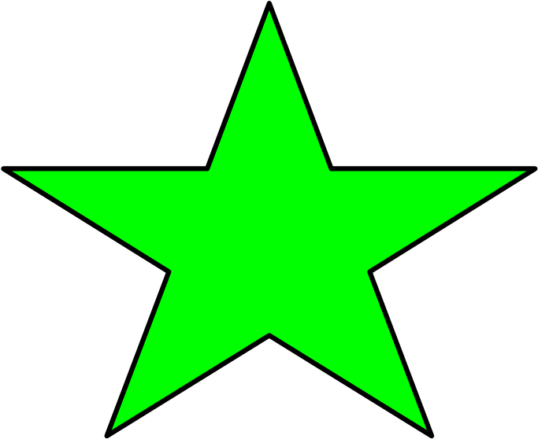

<!DOCTYPE html>
<html lang="en">
  <head>
    <meta charset="utf-8" />
    <meta name="viewport" content="width=device-width, initial-scale=1" />
    <title>JsPsych Video Experiment</title>
    <link href="jspsych/jspsych.css" rel="stylesheet" type="text/css" />
    <script src="jspsych/jspsych.js"></script>
    <script src="jspsych/plugin-html-keyboard-response.js"></script>
    <script src="jspsych/plugin-html-button-response.js"></script>
    <script src="jspsych/plugin-preload.js"></script>
    <script src="jspsych/plugin-webgazer-init-camera.js"></script>
    <script src="jspsych/plugin-webgazer-calibrate.js"></script>
    <script src="jspsych/plugin-webgazer-validate.js"></script>
    <script src="jspsych/webgazer.js"></script>
    <script src="jspsych/extension-webgazer.js"></script>
    <script src="https://unpkg.com/@jspsych-contrib/plugin-pipe"></script>
    <style>
      .jspsych-btn {
        margin-bottom: 10px;
      }

      @keyframes spin {
        from { transform: rotate(0deg); }
        to { transform: rotate(360deg); }
      }

      .fixation-star {
        width: 100px;
        height: 100px;
        animation: spin 1.5s linear infinite;
      }

      .calib-image {
        width: 110px;
        height: 110px;
        object-fit: contain;
      }

      .lab-footer {
        color: grey;
        font-size: 14px;
        margin-top: 30px;
      }
    </style>
  </head>
  <body></body>
  <script>
    const jsPsych = initJsPsych({
      extensions: [
        { type: jsPsychExtensionWebgazer }
      ]
    });

    const videoFiles = [
      'vid/introduction.mp4',
      'vid/bee_positive.mp4',
      'vid/bee_negation.mp4',
      'vid/bee_maybe.mp4',
      'vid/bee_gleebly.mp4'
    ];

    // Grey lab-name footer appended to the bottom of every instruction screen.
    const labFooter = '<p class="lab-footer">NYU Child Language Lab</p>';

    // ---------- Preload ----------
    const preload = {
      type: jsPsychPreload,
      video: videoFiles,
      images: ['img/star.png', 'img/apple.png', 'img/kiwi.png', 'img/blueberry.png', 'img/strawberry.png', 'img/lemon.png'],
      audio: ['snd/ding.mp3', 'snd/sparkle.mp3']
    };

    // ---------- Intro ----------
    const welcome = {
      type: jsPsychHtmlKeyboardResponse,
      stimulus: '<p>Welcome to the experiment! Press any key to begin.</p>' + labFooter
    };

    // ---------- Camera setup ----------
    const cameraInstructions = {
      type: jsPsychHtmlButtonResponse,
      stimulus: `
        <p>In order to participate you must allow the experiment to use your camera for eye tracking.</p>
        <p>You will be prompted to do this on the next screen.</p>
        <p>If you do not wish to allow use of your camera, you cannot participate in this experiment.</p>
        <p>It may take up to 30 seconds for the camera to initialize after you give permission. Please make sure your face is clearly visible and well lit.</p>
      ` + labFooter,
      choices: ['Got it']
    };

    const initCamera = {
      type: jsPsychWebgazerInitCamera
    };

    // ---------- Calibration ----------
    const calibrationInstructions = {
      type: jsPsychHtmlButtonResponse,
      stimulus: `
        <p>Now you'll calibrate the eye tracker, so the software can use the image of your eyes to predict where you're looking.</p>
        <p>A series of dots will appear on the screen. Look at each dot and click on it.</p>
      ` + labFooter,
      choices: ['Got it']
    };

    // ---------- Custom "fruit" calibration (images + sound instead of dots) ----------
    // Each entry is one calibration target: where it sits on screen (as a % of
    // width/height, same convention the built-in plugin used) and which fruit
    // image to show there.
    const calibrationTargets = [
      { x: 25, y: 25, img: 'img/apple.png' },
      { x: 75, y: 25, img: 'img/kiwi.png' },
      { x: 50, y: 50, img: 'img/lemon.png' },
      { x: 25, y: 75, img: 'img/blueberry.png' },
      { x: 75, y: 75, img: 'img/strawberry.png' }
    ];

    // Builds one clickable-fruit calibration trial at position (x%, y%).
    // Clicking it plays ding.mp3 and registers the click as a calibration
    // point with WebGazer, exactly like clicking a dot would.
    function makeCalibrationPoint(x, y, imgSrc) {
      return {
        type: jsPsychHtmlButtonResponse,
        stimulus: '',
        choices: [``],
        button_html: '<button class="calib-btn">%choice%</button>',
        on_load: function () {
          const btn = document.querySelector('.calib-btn');
          btn.style.position = 'absolute';
          btn.style.left = x + '%';
          btn.style.top = y + '%';
          btn.style.transform = 'translate(-50%, -50%)';
          btn.style.background = 'none';
          btn.style.border = 'none';
          btn.style.padding = '0';
          btn.style.cursor = 'pointer';
        },
        on_finish: function () {
          const ding = new Audio('snd/ding.mp3');
          ding.play().catch(() => {}); // ignore autoplay-block errors
          // Convert the percentage position to pixel coordinates and tell
          // WebGazer this is a calibration event, same as a dot click would.
          const px = Math.round((x / 100) * window.innerWidth);
          const py = Math.round((y / 100) * window.innerHeight);
          jsPsych.extensions.webgazer.calibratePoint(px, py);
        }
      };
    }

    // Repeats the target set (default: 2x, same as the original
    // repetitions_per_point) and shuffles the order, then builds a trial
    // for each one.
    function buildCalibrationTimeline(targets, repetitions = 2, randomize = true) {
      let points = [];
      for (let r = 0; r < repetitions; r++) points = points.concat(targets);
      if (randomize) points = jsPsych.randomization.shuffle(points);
      return points.map((t) => makeCalibrationPoint(t.x, t.y, t.img));
    }

    const calibration = {
      timeline: buildCalibrationTimeline(calibrationTargets, 2, true)
    };

    // ---------- Validation ----------
    const validationInstructions = {
      type: jsPsychHtmlButtonResponse,
      stimulus: `
        <p>Now we'll measure the accuracy of the calibration.</p>
        <p>Look at each dot as it appears on the screen.</p>
        <p style="font-weight:bold;">You do not need to click on the dots this time.</p>
      ` + labFooter,
      choices: ['Got it'],
      post_trial_gap: 1000
    };

    const validation = {
      type: jsPsychWebgazerValidate,
      validation_points: [
        [25, 25], [75, 25], [50, 50], [25, 75], [75, 75]
      ],
      roi_radius: 200,
      time_to_saccade: 1000,
      validation_duration: 2000,
      data: { task: 'validate' }
    };

    // If accuracy is too low, recalibrate once automatically
    const recalibrateInstructions = {
      type: jsPsychHtmlButtonResponse,
      stimulus: `
        <p>The accuracy of the calibration is a little lower than we'd like.</p>
        <p>Let's try calibrating one more time.</p>
      ` + labFooter,
      choices: ['OK']
    };

    const recalibrate = {
      timeline: [recalibrateInstructions, calibration, validationInstructions, validation],
      conditional_function: function () {
        const validationData = jsPsych.data.get().filter({ task: 'validate' }).values();
        const last = validationData[validationData.length - 1];
        return last.percent_in_roi.some((x) => x < 50);
      }
    };

    const calibrationDone = {
      type: jsPsychHtmlButtonResponse,
      stimulus: '<p>Great, we\'re done with calibration!</p>' + labFooter,
      choices: ['OK']
    };

    // ---------- Task instructions ----------
    const instructions = {
      type: jsPsychHtmlKeyboardResponse,
      stimulus: '<p>After each video finishes, press the spacebar to continue. Press any key to start!</p>' + labFooter
    };

    // ---------- Fixation (spinning star) ----------
    // Shown before each video to draw participants' gaze to the center of the screen.
    const fixationDuration = 2000; // ms

    function makeFixationTrial(video) {
      return {
        type: jsPsychHtmlKeyboardResponse,
        stimulus: `
          <div style="text-align:center;">
            
          </div>
        `,
        choices: "NO_KEYS",
        trial_duration: fixationDuration,
        on_load: function () {
          const sparkle = new Audio('snd/sparkle.mp3');
          sparkle.play().catch(() => {}); // ignore autoplay-block errors
        },
        data: { task: 'fixation', video_file: video }
      };
    }

    // ---------- Video trials with gaze tracking ----------
    const videoTrials = videoFiles.map((video) => ({
      type: jsPsychHtmlKeyboardResponse,
      stimulus: `
        <div style="text-align:center;">
          <video id="stim-video" autoplay preload="auto" playsinline width="800" style="max-width:100%;">
            <source src="${video}" type="video/mp4">
            Your browser does not support HTML video.
          </video>
        </div>
      `,
      prompt: '<p>Press the spacebar after the video finishes.</p>',
      choices: [' '],
      extensions: [
        {
          type: jsPsychExtensionWebgazer,
          params: { targets: ['#stim-video'] }
        }
      ],
      data: { task: 'video', video_file: video }
    }));

    // Interleave: fixation, video, fixation, video, ...
    const videoBlock = videoFiles.flatMap((video, i) => [
      makeFixationTrial(video),
      videoTrials[i]
    ]);

    // ---------- Save data to OSF via DataPipe ----------
    // Replace this with the experiment ID from your DataPipe dashboard
    // (pipe.jspsych.org -> your experiment -> "Experiment ID").
    // This is NOT the same as your OSF project ID.
    const dataPipeExperimentId = 'WEbgGWgBVtbp';

    const saveDataPipe = {
      type: jsPsychPipe,
      action: "save",
      experiment_id: dataPipeExperimentId,
      filename: () => `${jsPsych.randomization.randomID(10)}.csv`,
      data_string: () => jsPsych.data.get().csv()
    };

    // ---------- Goodbye ----------
    const goodbye = {
      type: jsPsychHtmlKeyboardResponse,
      stimulus: '<p>Thank you. The experiment is complete.</p><p>Press any key to finish.</p>' + labFooter
    };

    const timeline = [
      preload,
      welcome,
      cameraInstructions,
      initCamera,
      calibrationInstructions,
      calibration,
      validationInstructions,
      validation,
      recalibrate,
      calibrationDone,
      instructions,
      ...videoBlock,
      saveDataPipe,
      goodbye
    ];

    jsPsych.run(timeline);
  </script>
</html>
